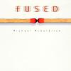

Celtic Lyrics Corner > Artists & Groups > Michael McGoldrick > Fused
|  |
Fused
(2000) |
| Tracks : |
1. Watermans
2. James Brown's March 3. The Otters' Set 4. Goodbye Grant 5. Lough Mountain 6. Fisher Street 7. Teehan's 8. Windbroke 9. Buain Na Choirce 10. Ridee 11. Reid's Reels 12. Hip Agus Hop 13. Donal Og |